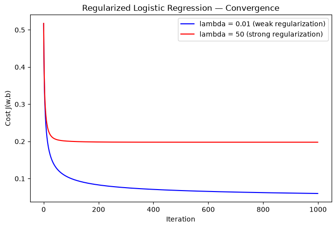
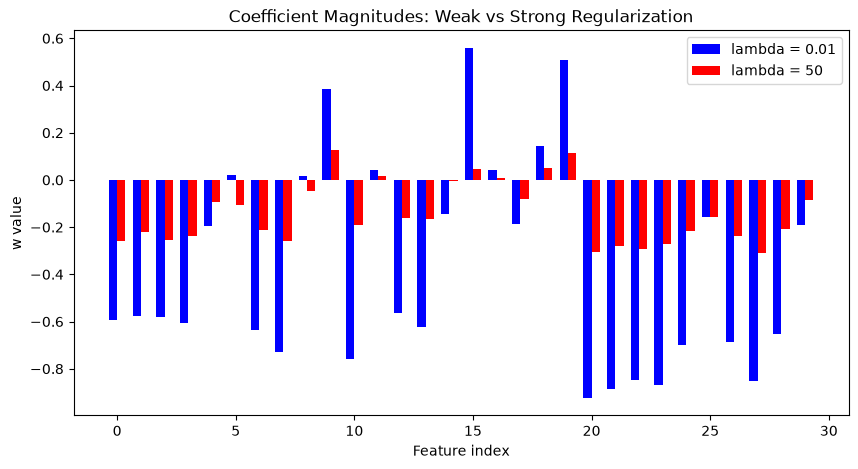

Cost functions with regularization#
Cost function for regularized linear regression#
The equation for the cost function of regularized linear regression is:
(1)
where:
(2)
Compare this to the cost function without regularization:
The difference is the regularization term, \(\frac{\lambda}{2m} \sum_{j=0}^{n-1} w_j^2\).
Including this term encourages gradient descent to minimize the size of the parameters. Note, in this example, the parameter \(b\) is not regularized — this is standard practice.
Below is an implementation of equations (1) and (2), using the same for loop pattern over all m examples used throughout this course.
Reading the code against the formula — the first block (cost = ...) is exactly your existing compute_cost from earlier in this conversation, unchanged: loop over i, accumulate squared error, divide by 2m.
The second block (reg_cost = ...) is new — a separate loop over j (features, not examples), summing \(w_j^2\) for every feature, then scaling by \(\frac{\lambda}{2m}\). This is a different loop variable and a different range (n features, not m examples) — worth noting since it’s easy to accidentally conflate the two loops.
total_cost = cost + reg_cost combines both terms — matching equation (1) directly: unregularized cost plus the regularization term, added once at the very end.
def compute_cost_linear_reg(X, y, w, b, lambda_ = 1):
"""
Computes the cost over all examples
Args:
X (ndarray (m,n): Data, m examples with n features
y (ndarray (m,)): target values
w (ndarray (n,)): model parameters
b (scalar) : model parameter
lambda_ (scalar): Controls amount of regularization
Returns:
total_cost (scalar): cost
"""
m = X.shape[0]
n = len(w)
cost = 0.
for i in range(m):
f_wb_i = np.dot(X[i], w) + b #(n,)(n,)=scalar, see np.dot
cost = cost + (f_wb_i - y[i])**2 #scalar
cost = cost / (2 * m) #scalar
reg_cost = 0
for j in range(n):
reg_cost += (w[j]**2) #scalar
reg_cost = (lambda_/(2*m)) * reg_cost #scalar
total_cost = cost + reg_cost #scalar
return total_cost #scalar
Cost function for regularized logistic regression#
For regularized logistic regression, the cost function is of the form:
(3)
where:
(4)
Compare this to the unregularized cost function:
As with linear regression above, the difference is the same regularization term, \(\frac{\lambda}{2m} \sum_{j=0}^{n-1} w_j^2\) — and \(b\) remains unregularized, same standard practice.
Same pattern as linear regression’s regularized cost — the base cost loop is identical to your earlier compute_cost_logistic (sigmoid + combined log-loss formula), and the exact same reg_cost block from compute_cost_linear_reg is appended afterward, unchanged. Regularization is added as a separate, self-contained term on top of whichever base cost function you’re using — that modularity is worth noticing, since it’s the same pattern you’ll see again in the gradient functions next.
def compute_cost_logistic_reg(X, y, w, b, lambda_ = 1):
"""
Computes the cost over all examples
Args:
X (ndarray (m,n): Data, m examples with n features
y (ndarray (m,)): target values
w (ndarray (n,)): model parameters
b (scalar) : model parameter
lambda_ (scalar): Controls amount of regularization
Returns:
total_cost (scalar): cost
"""
m,n = X.shape
cost = 0.
for i in range(m):
z_i = np.dot(X[i], w) + b #(n,)(n,)=scalar, see np.dot
f_wb_i = sigmoid(z_i) #scalar
cost += -y[i]*np.log(f_wb_i) - (1-y[i])*np.log(1-f_wb_i) #scalar
cost = cost/m #scalar
reg_cost = 0
for j in range(n):
reg_cost += (w[j]**2) #scalar
reg_cost = (lambda_/(2*m)) * reg_cost #scalar
total_cost = cost + reg_cost #scalar
return total_cost #scalar
Computing the Gradient with regularization (both linear/logistic)#
The gradient calculation for both linear and logistic regression are nearly identical, differing only in how \(f_{\mathbf{w},b}\) is computed:
(2), (3)
\(m\) is the number of training examples in the data set
\(f_{\mathbf{w},b}(x^{(i)})\) is the model’s prediction, \(y^{(i)}\) is the target
For linear regression: \(f_{\mathbf{w},b}(x) = \mathbf{w} \cdot \mathbf{x} + b\)
For logistic regression: \(z = \mathbf{w} \cdot \mathbf{x} + b\), \(f_{\mathbf{w},b}(x) = g(z)\), where \(g(z) = \frac{1}{1+e^{-z}}\)
Notice \(\frac{\partial J}{\partial b}\) has no regularization term — this matches “b is not regularized” from the cost function definitions above; only the \(w_j\) gradient gets the extra \(\frac{\lambda}{m}w_j\) term.
Reading the structure — the first two loops (accumulating err, then dividing by m) are exactly your original compute_gradient from earlier in this conversation, completely unchanged. Regularization is added as a third, separate loop afterward — looping over j (features) and adding \(\frac{\lambda}{m}w_j\) onto each dj_dw[j] individually.
Note this term is added after dj_dw = dj_dw / m — the accumulated sum is already averaged by that point, and \(\frac{\lambda}{m}w_j\) gets added directly (not accumulated/summed like the loss term was), since it only depends on a single w[j], not a sum over examples.
def compute_gradient_linear_reg(X, y, w, b, lambda_):
"""
Computes the gradient for linear regression
Args:
X (ndarray (m,n): Data, m examples with n features
y (ndarray (m,)): target values
w (ndarray (n,)): model parameters
b (scalar) : model parameter
lambda_ (scalar): Controls amount of regularization
Returns:
dj_dw (ndarray (n,)): The gradient of the cost w.r.t. the parameters w.
dj_db (scalar): The gradient of the cost w.r.t. the parameter b.
"""
m,n = X.shape #(number of examples, number of features)
dj_dw = np.zeros((n,))
dj_db = 0.
for i in range(m):
err = (np.dot(X[i], w) + b) - y[i]
for j in range(n):
dj_dw[j] = dj_dw[j] + err * X[i, j]
dj_db = dj_db + err
dj_dw = dj_dw / m
dj_db = dj_db / m
for j in range(n):
dj_dw[j] = dj_dw[j] + (lambda_/m) * w[j]
return dj_db, dj_dw
Same regularization addition, applied to the logistic gradient — compare directly against Chunk 6: the base two-loop structure differs only in f_wb_i = sigmoid(...) replacing the raw linear combination, exactly matching the “differing only in computation of \(f_{\mathbf{w},b}\)” note from the math above. The regularization loop appended at the end is character-for-character identical between both functions — same for j in range(n): dj_dw[j] = dj_dw[j] + (lambda_/m) * w[j] block in both.
def compute_gradient_logistic_reg(X, y, w, b, lambda_):
"""
Computes the gradient for logistic regression
Args:
X (ndarray (m,n): Data, m examples with n features
y (ndarray (m,)): target values
w (ndarray (n,)): model parameters
b (scalar) : model parameter
lambda_ (scalar): Controls amount of regularization
Returns
dj_dw (ndarray Shape (n,)): The gradient of the cost w.r.t. the parameters w.
dj_db (scalar) : The gradient of the cost w.r.t. the parameter b.
"""
m,n = X.shape
dj_dw = np.zeros((n,)) #(n,)
dj_db = 0.0 #scalar
for i in range(m):
f_wb_i = sigmoid(np.dot(X[i],w) + b) #(n,)(n,)=scalar
err_i = f_wb_i - y[i] #scalar
for j in range(n):
dj_dw[j] = dj_dw[j] + err_i * X[i,j] #scalar
dj_db = dj_db + err_i
dj_dw = dj_dw/m #(n,)
dj_db = dj_db/m #scalar
for j in range(n):
dj_dw[j] = dj_dw[j] + (lambda_/m) * w[j]
return dj_db, dj_dw
Using the Breast Cancer dataset again for consistency with your earlier logistic regression chunks. This reuses the gradient_descent driver function from before — unchanged — just passing it the regularized gradient/cost functions instead.
import numpy as np
import copy
import math
import matplotlib.pyplot as plt
from sklearn.datasets import load_breast_cancer
from sklearn.model_selection import train_test_split
from sklearn.preprocessing import StandardScaler
data = load_breast_cancer()
X, y = data.data, data.target
X_train, X_test, y_train, y_test = train_test_split(X, y, test_size=0.2, random_state=1)
scaler = StandardScaler()
X_train_scaled = scaler.fit_transform(X_train)
X_test_scaled = scaler.transform(X_test)
def sigmoid(z):
return 1 / (1 + np.exp(-z))
def gradient_descent_reg(X, y, w_in, b_in, alpha, num_iters, lambda_, cost_function, gradient_function):
J_history = []
w = copy.deepcopy(w_in)
b = b_in
for i in range(num_iters):
dj_db, dj_dw = gradient_function(X, y, w, b, lambda_)
w = w - alpha * dj_dw
b = b - alpha * dj_db
if i < 100000:
J_history.append(cost_function(X, y, w, b, lambda_))
if i % math.ceil(num_iters / 10) == 0:
print(f"Iteration {i:4d}: Cost {J_history[-1]:.4f}")
return w, b, J_history
n_features = X_train_scaled.shape[1]
w_init = np.zeros(n_features)
b_init = 0.0
# train with two different lambda values to compare
w_lo, b_lo, J_hist_lo = gradient_descent_reg(X_train_scaled, y_train, w_init, b_init, alpha=0.1, num_iters=1000, lambda_=0.01, cost_function=compute_cost_logistic_reg, gradient_function=compute_gradient_logistic_reg)
w_hi, b_hi, J_hist_hi = gradient_descent_reg(X_train_scaled, y_train, w_init, b_init, alpha=0.1, num_iters=1000, lambda_=50, cost_function=compute_cost_logistic_reg, gradient_function=compute_gradient_logistic_reg)
Iteration 0: Cost 0.5164
Iteration 100: Cost 0.1002
Iteration 200: Cost 0.0830
Iteration 300: Cost 0.0754
Iteration 400: Cost 0.0709
Iteration 500: Cost 0.0678
Iteration 600: Cost 0.0655
Iteration 700: Cost 0.0637
Iteration 800: Cost 0.0623
Iteration 900: Cost 0.0610
Iteration 0: Cost 0.5176
Iteration 100: Cost 0.2002
Iteration 200: Cost 0.1984
Iteration 300: Cost 0.1980
Iteration 400: Cost 0.1979
Iteration 500: Cost 0.1979
Iteration 600: Cost 0.1979
Iteration 700: Cost 0.1979
Iteration 800: Cost 0.1979
Iteration 900: Cost 0.1979
Same convergence-check plot as before, now overlaying two lambda_ values on one chart, to see how regularization strength affects the cost curve’s shape/level.
plt.figure(figsize=(8, 5))
plt.plot(J_hist_lo, color='blue', label='lambda = 0.01 (weak regularization)')
plt.plot(J_hist_hi, color='red', label='lambda = 50 (strong regularization)')
plt.xlabel('Iteration')
plt.ylabel('Cost J(w,b)')
plt.title('Regularized Logistic Regression — Convergence')
plt.legend()
plt.show()

This is the plot that directly visualizes what regularization is supposed to do — “encourages gradient descent to minimize the size of the parameters,” from the math notes above. Comparing w magnitudes between low and high lambda_ should show the high-lambda bars shrunk toward zero relative to low-lambda.
x_pos = np.arange(len(w_lo))
width = 0.35
plt.figure(figsize=(10, 5))
plt.bar(x_pos - width/2, w_lo, width, color='blue', label='lambda = 0.01')
plt.bar(x_pos + width/2, w_hi, width, color='red', label='lambda = 50')
plt.xlabel('Feature index')
plt.ylabel('w value')
plt.title('Coefficient Magnitudes: Weak vs Strong Regularization')
plt.legend()
plt.show()
